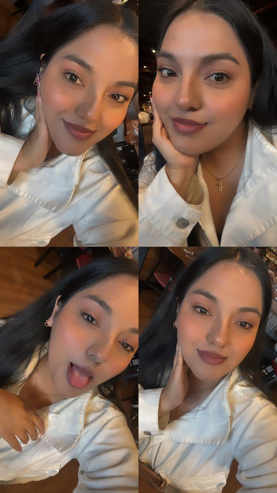
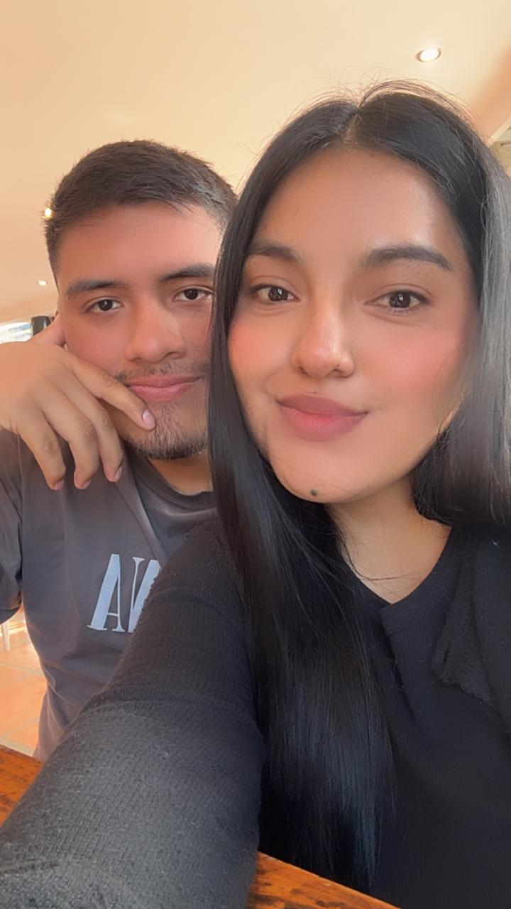
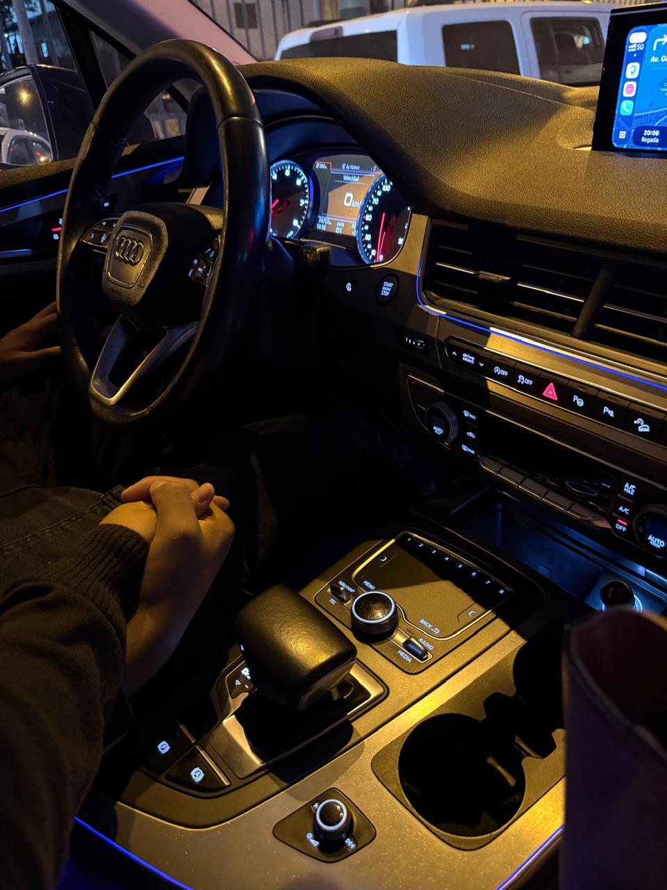

Hoy es un día especial, el inicio de la primavera, y con ella la tradición de las flores amarillas. Quería hacer algo diferente y único para ti, porque te mereces el mundo entero. Las flores amarillas significan alegría, luz, y un amor que florece y perdura en el tiempo.
Así es exactamente como me haces sentir todos los días. Eres mi sol, mi inspiración y la persona con la que quiero compartir todas mis estaciones. He preparado este pequeño detalle para recordarte lo mucho que te amo y lo especial que eres para mí.
[Elia Abigail Alfaro Rodriguez]
Nuestro Recuerdo
"Este dia inolvidable para ambos mi princesa, bueno mas para ti porque subiste a un bus aqui en lima me causo mucha risa y sueño el viaje jeje.Lo pase increible ese viaje, lo recuerdo cada dia cuando subo al bus jeje"
Mi mujer hermosa

"Eres una increible mujer amo como me tratas eres hermosa en todos los aspectos eres la unica mujer que me hace sentir especial adoro pasar tiempo juntos cuando estamos aqui en Lima, eres bella mi vida"
Mi paz

"Pasar momentos a tu lado me trae paz y tranquilidad a mi vida mi amor, salir a pasear, comer y hacer compras es lo mas divertido que hago cuando estoy contigo te amo inmensamente y espero que siempre sigamos saliendo hasta decir basta jeje"
Diversión contigo
"Me haces hacer cosas que de mi no saldrian, haces que salga mi niño interior o mi payaso jaja, me gusta como tu iniciativas eso en mi espero que siempre lo sigas haciendo porque me haces muy feliz amor"
Compañera de vida

"Asi como disfrutamos la salidas desde ahora, espero que lo sigamos haciendo y construir lo nuestro con nuestro propio esfuerzo, quiero que seas mi compañera de vida mi amor. Crecer ambos tener todo lo nuestro sin la necesidad de pedir nada a nadie, solo seremos tu y yo, te amo con todo mi corazon y feliz dia de primavera mi vida"